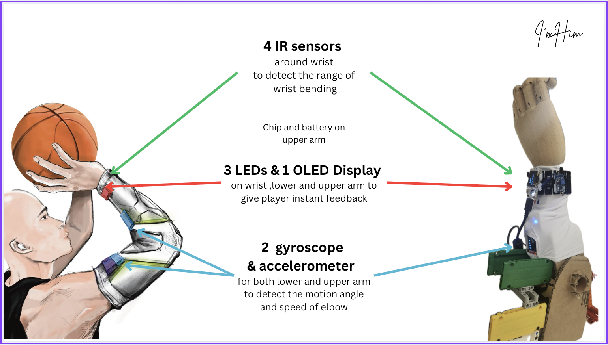
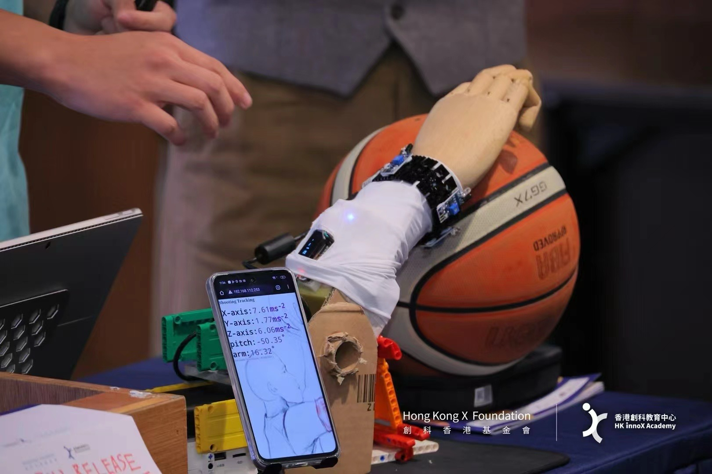
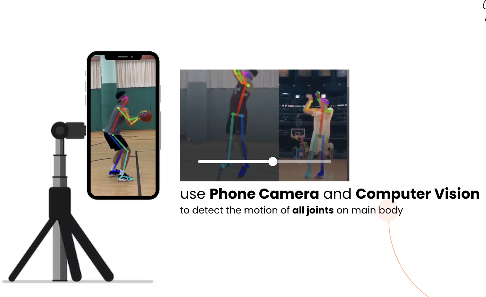
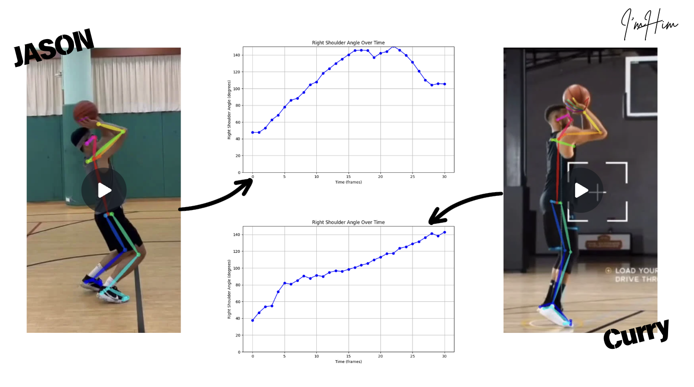
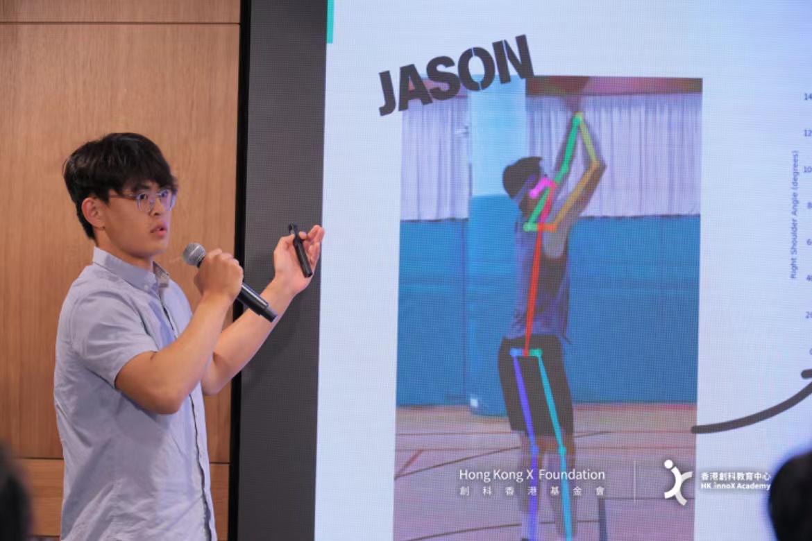
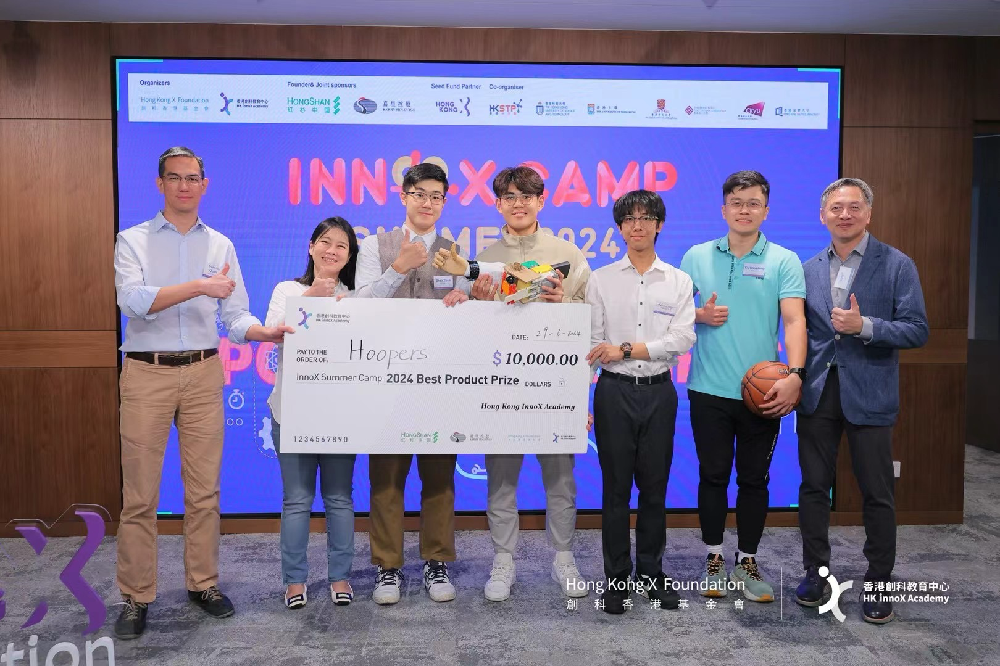

Hoopers was my first startup, born from a simple observation: amateur players rarely have access to professional shooting coaches. We set out to bring coaching-level feedback to anyone, anywhere by combining wearable sensing with computer vision and pro-level shooting data.

Our prototype used a wearable sleeve with 3 IMUs and 1 IR sensor, connected via Bluetooth, to capture detailed motion of the shooting arm and wrist. In parallel, we used OpenPose in post-processing to extract full-body keypoints from video, tracking joints such as the ankle, knee, hip, elbow, wrist, and shoulder.


From these signals, we computed velocity, acceleration, and joint movement patterns, then compared each player’s shooting motion against a professional dataset consisting of 200 hardware+video samples and 500 NBA video-only samples. We clustered pros into four archetypal shooting styles and matched each user to the nearest style based on timing and joint-angle dynamics, generating targeted feedback to help them “close the gap” toward that style.
With this prototype, our team (myself as CEO together with Justin Zhao, Adrian Wu, and Ivan Yiu) won No.1 in the HK InnoX Entrepreneurship Camp, received a HKD 10K prize, and secured HKSTP Ideation funding of HKD 100K. However, the project ultimately failed during incubation. Through scaled user interviews and questionnaires, amateur players told us they had no time or desire to train that seriously, while professional teams found the insights redundant with what coaches already provided. Despite strong engineering, we had built something misaligned with what people actually valued.


Hoopers taught me that building impressive technology is not enough; it has to be grounded in a real, felt need. We were solving a “cool” problem, not a human problem. That realization reshaped how I approached entrepreneurship and engineering: start with real human motivation, then build the technology around it.
Instead of letting the failure discourage me, I stepped back and applied the lesson to my next venture. This time, I began with user psychology rather than sensors or models. Many amateur players were less interested in performance analytics and more eager to express identity, feel recognized, and share something meaningful with teammates. Guided by that insight, I created Patky Sports Card, a small venture that produces personalized trading cards for amateur athletes.
Early production was slow—segmentation, layer alignment, and bio writing took hours per card. By integrating SAM3 for fast segmentation, automating layer handling, and generating bios through prompt-engineered scripts, I reduced creation time from hours to minutes. The result was a product users genuinely wanted: we have now served 200+ customers, partnered with teams in Hong Kong and Zhuhai, and built a steady revenue of around HKD 2,000 per month. This second attempt reinforced a lesson I carry forward: technology becomes meaningful only when it resonates with real people.